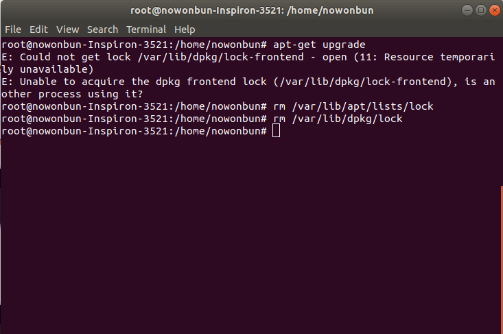

[Ubuntu] 「acquire the dpkg frontend lock」のエラーを解決方法
こんにちは。明月です。
Ubuntuを利用する時に「apt-get」コマンドをよく使います。パッケージをインストールする時やアップデートする時や。。。
その時に、たまに「acquire the dpkg frontend lock」エラーが発生しますが、その時に解決方法です。
実は「acquire the dpkg frontend lock」のエラーはインストールやアップデート中でパソコンの電源を切る時、apt-getのロックがそのまま残っているままで「apt-get」でまたインストールやアップデートすると発生することですね。
また、別途のターミナルで「apt-get」を使う時も発生します。その時には解除するとNGですね。

筆者の場合は「apt-get upgrade」中でパソコンパワを消してしまって、また起動してアップデードコマンドを実行したら発生しました。
先は「lock」をすべて削除します。
sudo rm /var/lib/apt/lists/lock
sudo rm /var/lib/dpkg/lock
sudo dpkg --configure -a
sudo apt install -f

その後でまた「apt-get upgrade」のコマンドを実行しました。
lock関係なエラーがなくなってupgradeが実行されました。
参照 - https://www.linuxuprising.com/2018/07/how-to-fix-could-not-get-lock.html
「Devlopment note / Linux」の他投稿
- [Ubuntu] PHPをインストール、Composer設定する方法2019/11/13 07:32:21
- [Ubuntu] テーマ(Arc)を変更する方法(tweak)2019/11/12 07:32:13
- [Ubuntu] Apache2をインストールする方法2019/11/11 07:28:28
- [Ubuntu] 「acquire the dpkg frontend lock」のエラーを解決方法2019/11/10 22:19:34
- [Ubuntu] JavaインストールとEclipseをインストールする方法2019/11/08 07:29:55
- [Ubuntu] MariaDB(Mysql)をインストールする方法2019/11/07 07:50:58
- [Ubuntu] Chromeをインストールする方法2019/11/06 19:48:19
- [CentOS] YUMについて、YUMが出来ない場合処理方法2019/11/05 07:17:58
- [CentOS] MariaDB(Mysql)をインストール2019/11/04 18:35:10
- [CentOS] FTPインストールする方法(vsftpd)2019/11/01 07:29:57
- [CentOS] SAMBAインストール方法2019/10/30 07:38:57
最新投稿
- [Javascript ] WebのFull calendar(スケジュールカレンダー)の使い方法2021/07/15 21:35:36
- [Java] 56. Web serviceのサーブレット(Servlet)で初期化作業(properties設定)2021/07/02 17:10:36
- [Java] 55. Spring frameworkに文字化けを解決する方法(Encoding設定)2021/06/30 16:37:16
- [Java] 54. Spring frameworkでWeb filterを使う方法2021/06/29 18:25:12
- [Java] 53. ウェブサービス(Web service)でエラーページを処理する方法2021/06/25 13:35:54
- [Design pattern] 1-3. ファクトリメソッドパターン(Factory method pattern)2021/06/23 19:45:37
- [Java] WebSocketでチャット履歴をローディングする方法2021/06/15 18:34:45
- [Java] WebSocketを利用してユーザ(サイト運用者)が他のユーザとチャットする方法2021/06/15 17:20:08
- [Design pattern] 1-2. ビルダーパターン(Builder pattern)2021/06/11 19:06:28
- [Design pattern] 1-1. シングルトンパターン(Singleton pattern)2021/06/09 19:40:05
- [Design Pattern] デザインパターンの紹介2021/06/08 20:42:36
- [Tools] Dbeaver(無料Sql queryブラウザツール)2021/04/28 18:26:49
- [Bootstrap] HTMLデザインのフレームワークのBootstrap紹介2020/07/30 19:06:36
- [Python] メール(smtplib)を送信する方法2020/07/27 18:38:43
- [Python] HttpConnection(requestsモジュール)でウェブサーバーで接続する方法2020/07/20 14:41:51